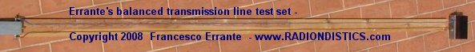
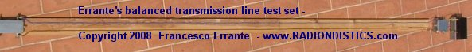
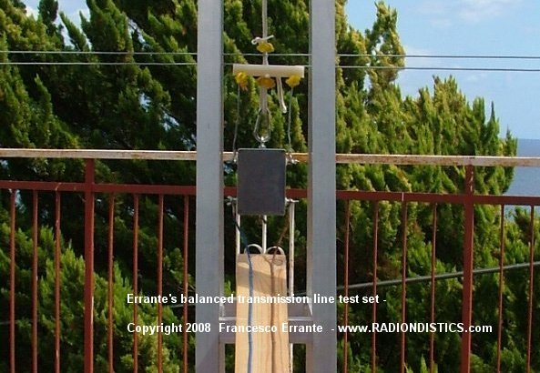
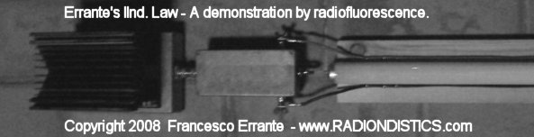
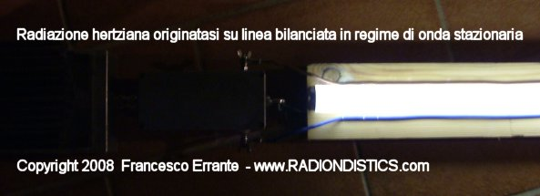
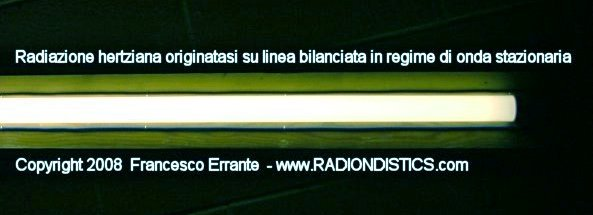

|
Planning a trip to Sicily? �Then,
make sure you won't be feeding the Mafia!
 |
|
|
Se hai un interesse scientifico in materia di fisica della
radio, visiona questo sito internet nell'ordine consigliato!
|
|
|
|
Apparato di Errante
per la fisica delle linee di trasmissione bilanciate per segnali elettrici a radio
frequenza .
Premessa: sebbene
quando ci si riferisce alle linee di trasmissione bilanciate si tenda a
pensare ad una linea formata da un paio di conduttori elettrici
identici e paralleli tra di loro, comunemente dette "linee
bifilari", bisogna tenere presente che le linee di trasmissione
bilanciate possono anche essere composte da un qualsiasi numero pari di
conduttori atti a condurre uno stesso numero di correnti in un
arrangiamento multi-fase.
(L'arrangiamento di correnti poli-fase � stato introdotto in elettrotecnica da Nikola Tesla)
Le linee di trasmissione bilanciate possono essere sia
simmetriche che asimmetriche .
Francesco
Errante
Definizione di
linea di trasmissione bilanciata: � "una linea di trasmissione
per segnali elettrici � elettricamente bilanciata quando la stessa non
interviene a modificare lo sfasamento delle correnti che la
attraversano ed ognuno dei suoi conduttori trasferisce la stessa
quantita' di energia per unita' di tempo
(potenza)."
Francesco
Errante
Definizione di
linea di trasmissione bilanciata simmetrica: � "una
linea di trasmissione per segnali elettrici elettricamente bilanciata �
simmetrica quando � formata da conduttori elettrici che esibiscono lo
stesso valore di impedenza rispetto alla terra od al nodo di terra
virtuale."
Francesco
Errante
Definizione di
linea di trasmissione bilanciata a-simmetrica: � "una
linea di trasmissione per segnali elettrici elettricamente bilanciata �
a-simmetrica quando � formata da conduttori elettrici che NON
esibiscono lo stesso valore di impedenza rispetto alla terra od al nodo
di terra virtuale."
Francesco
Errante
Io principio di
Errante per le linee di trasmissione: � "una linea di
trasmissione per segnali radioelettrici, sia essa bilanciata o
sbilanciata, se in regime di onda progressiva, � sempre
a-periodica."
Francesco
Errante
IIo principio di
Errante per le linee di trasmissione: "una qualsiasi
linea di trasmissione per segnali radioelettrici pu� essere convertita
da bilanciata in sbilanciata e viceversa, infinite
volte."
Francesco
Errante
IIIo principio di
Errante per le linee di trasmissione: "In ogni punto
di una qualsiasi linea di trasmissione per segnali radiolettrici, sia
essa bilanciata che sbilanciata, � sempre possibile generare un nodo di
terra virtuale."
Francesco
Errante
IIa legge di
Errante applicata alle linee di trasmissione "una
linea di trasmissione per segnali radioelettrici, sia essa bilanciata
che sbilanciata, se in regime di onda progressiva, non origina
radiazione hertziana."
Francesco
Errante
|
|
�
L'apparato ed il metodo di misura qui presentati
permettono di analizzare il comportamento elettrico delle linee di trasmissione
bilanciate per segnali elettrici a radio frequenza in regime di onda progressiva ed
in particolare hanno lo scopo di:
a) dimostrare che le linee di trasmissione bilanciate sono a-periodiche;
b) dimostrare che le linee di trasmissione bilanciate possono essere convertite in
sbilanciate e viceversa, infinite volte;
c) dimostrare che � sempre possibile generare un nodo di terra virtuale in ogni
punto di una qualsiasi linea di trasmissione;
d) dimostrare che le linee di trasmissione bilanciate, se perfettamente adattate,
sia alla sorgente RF che al carico, NON originano radiazione hertziana. IIa legge di
Errante.
�
�
Le linee di trasmissione bilanciate per
segnali elettrici a radio frequenza sono generalmente costituite, in modo omogeneo,
da due conduttori elettrici identici e paralleli non schermati ma possono essere
costituite anche da un numero maggiore di conduttori sia liberi che schermati.
�
Esempio di impiego di linea elettricamente bilanciata
formata da 2 cavi coassiali(7) a schermatura individuale - Copyright © 2003 -
Francesco Errante
�
Errante's ONE-WIRE UNBALANCED RF TRANSMISSION LINE,
employing Errante's CAPACITIVE RF EARTH GROUNDING SYSTEM - Copyright © 2009 -
Francesco Errante
�
Una linea di trasmissione per segnali elettrici �
elettricamente bilanciata quando la stessa non interviene a modificare lo
sfasamento delle correnti che la attraversano.
perch� ci� sia possibile e' necessario che tutti i conduttori che costituiscono la
linea siano identici e che la linea stessa sia perfettamente adattata sia al suo
ingresso che alla sua uscita, ci� vuol dire che l'impedenza caratteristica della
linea deve essere uguale sia all'impedenza di uscita della fonte del segnale a
radio frequenza che all'impedenza del carico, sia esso reattivo o anti-induttivo.
Una linea di trasmissione correttamente adattata, quando � in esercizio, si trova
in regime di onda progressiva e si ha il massimo trasferimento
energetico possibile al carico ed assenza di radiazione hertziana.
Laddove la linea viaggi in stretta prossimit� della terra fisica, � anche
indispensabile che i suoi conduttori siano equidistanti dalla stessa al fine di
mantenerne costante il loro accoppiamento capacitivo con essa.
A parit� di distanza interassiale tra i conduttori della linea, la sua impedenza
caratteristica diminuisce col diminuire della distanza dalla terra fisica. Ci� �
dovuto all'accoppiamento capacitivo tra i conduttori della linea e la terra fisica
che si somma alla capacit� elettrica parassita, sempre presente tra i conduttori
della linea stessa.
Le linee bilanciate, debitamente isolate, possono viaggiare rasoterra o addirittura
interrate. In questi casi, lo stretto accoppiamento capacitivo tra i conduttori
della linea e la terra rende trascurabile le capacit� parassite tra i conduttori
della linea stessa e non necessiter� pi� che questi ultimi viaggino paralleli, ma
devono comunque essere identici, eccetto quando formino una linea bilanciata
a-simmetrica.
Le linee di trasmissione elettricamente bilanciate possono anche essere
geometricamente ed elettricamente a-simmetriche.
Una linea bilanciata a-simmetrica � cos� definita: "una linea di
trasmissione per segnali elettrici elettricamente bilanciata � a-simmetrica quando
la stessa non interviene a modificare lo sfasamento delle correnti che la
attraversano ed � formata da conduttori elettrici che non esibiscono lo stesso
valore di impedenza rispetto alla terra od al nodo di terra virtuale. Copyright
2008 Francesco Errante".
Lo stretto accoppiamento con la terra limita, per�, l'impiego di linee rasoterra ai
sistemi per basse e medie potenze, dove le tensioni in gioco non richiedono grossi
isolamenti.
Con il progredire delle tecnologie per le costruzioni radioelettriche, le linee
sbilanciate in cavo co-assiale hanno, via via, soppiantato le linee di trasmissione
bilanciate nella maggior parte delle applicazioni ad eccezione di quelle per
altissime potenze.
Un caso notevole di linea di trasmissione bilanciata che ricorre frequentemente fin
dagli albori della radiotecnica � dato dal loro impiego per l'alimentazione delle
antenne a dipolo ripiegato a mezz'onda. Ci� perch� alle utili propriet� del dipolo
ripiegato a mezz'onda si unisce la facilit� di realizzazione delle linee bilanciate
a 300 Ohm. (come analogamente avviene per i dipoli a mezz'onda a pi� archi
che presentano impedenze caratteristiche multiple di 300 Ohm)
Le grossolane osservazioni fatte senza alcun rigore scientifico e la troppa
facilit� con la quale � possibile alimentare un dipolo ripiegato a mezz'onda con un
tratto di linea bifilare a 300 Ohm ha portato tutti, fin ora, ad erroneamente
desumere e/o accettare che le linee bilanciate fossero esse stesse risonanti e che
pertanto si dovesse provvedere a neutralizzarne gli effetti con l'allungamento o
accorciamento delle stesse. Questo e' falso!
Al dilagare di queste �credenze� ha contribuito anche l�errata interpretazione da
parte di molti dell�esperimento di Ernst Lecher. La linea di Lecher,
infatti, evidenzia il comportamento elettrico di una linea bifilare in regime di
onda stazionaria ed il suo impiego come ondametro � vano se la linea � invece in
regime di onda progressiva (VSWR = 1:1) .
L'illusione strumentale che le linee bilanciate siano risonanti � data dal fatto
che non essendovi un netto punto di confine tra il carico reattivo, nella
fattispecie il dipolo ripiegato a mezz'onda, ed il tratto di linea bifilare che lo
alimenta, i segnali elettrici vedono il loro percorso variare in lunghezza al
variare della lunghezza della linea stessa con il risultato di spostare con
ciclicit� il punto di risonanza risultante del sistema stesso.
In verit�, se in un sistema costituito da fonte di segnale bilanciato,
linea bilanciata e radiatore si sostituisce il carico reattivo, costituito
dall'antenna, con un carico anti-induttivo di pari impedenza (carico fittizio) od
un carico reattivo perfettamente adattato, l'illusione della risonanza della linea
bilanciata scompare ed il sistema ritorna ad essere a-periodico, come dimostrato
qui appresso.
Qui appresso e' riportata la sequenza logica delle misure ed i
relativi esiti:
Queste misure, con la dovuta attrezzatura, possono essere eseguite in tre modi:
1) mantenendo costante la lunghezza d'onda del segnale radioelettrico di prova e
variando la lunghezza fisica della linea bilanciata;
2) mantenendo fissa la lunghezza fisica della linea bilanciata e variando la
lunghezza d'onda del segnale radioelettrico di prova;
3) variando sistematicamente sia la lunghezza fisica della linea bilanciata che la
lunghezza d'onda del segnale radioelettrico di prova.
Il secondo modo e' di gran lunga il pi� conveniente e veloce, quindi si �
utilizzata una linea bilanciata a 300 Ohm di lunghezza fisica fissa e si �
proceduto alle misure riflessometriche variando la lunghezza d'onda del segnale
radielettrico di prova.
Si noti, inoltre, che queste misure si possono eseguire su qualsiasi spettro di
frequenze radio, ma risulta conveniente operarle sullo spettro delle onde corte,
ci� perche le stesse permettono, tra l' altro, una maggiore escursione di lunghezza
d'onda a parit� di variazione di frequenza. Tutti i risultati delle misure
qui condotte sono, quindi, estendibili a tutto lo spettro delle radio
onde.
NB: Tutti i dispositivi qui utilizzati per l'ottenimento di nodi di terra virtuale
determinano un netto confine per i segnali a RF tra linee e radiatori o tra linee e
linee, mentre garantiscono sempre una totale continuit� galvanica tra tutti i
circuiti ad essi collegati, assicurando un solido percorso di terra comune che pu�
essere, all'occorrenza, collegato alle terra fisica. Vedi anche: generatore di terra virtuale per linee sbilanciate
|
Verifica sperimentale del comportamento
a-periodico delle linee bilanciate in regime di onda progressiva
OPERAZIONE PRELIMINARE: il sistema di misura
bilanciato-bilanciato viene sottoposto a verifica iniziale della linearit�
della sua risposta in frequenza.
|

|
|
Da sinistra verso destra: linea di TX co-assiale 50 Ohm -
sonda ROSmetrica - BalUn 50/300 Ohm - breve tratto di linea bifilare simmetrica
- BalUn 300/50 Ohm - Carico fittizio 50 Ohm.
Frequenze di prova: da 1,8 a 30 MHz a passi da 100 KHz
Potenza RF impiegata: 1 KW cw
R.O.S. misurato: � 1:1 � su tutto lo spettro
Esito: OK! Il sistema esibisce una risposta piatta entro lo spettro di misura
richiesto per questa verifica.
�
|
|
Linea bilanciata a 300 Ohm, alimentata da fonte
bilanciata a 300 Ohm, terminata su carico fittizio da 300 Ohm e sottoposta a
misura rosmetrica
|

|
|
Da sinistra verso destra: BalUn 50/300 Ohm - linea bifilare simmetrica da 300
Ohm, lunga metri 4 ca. - Carico fittizio 300 Ohm.
Frequenze di prova: da 1,8 a 30 MHz a passi da 100 KHz
Potenza RF impiegata: 1 KW cw
R.O.S. misurato: � 1:1 � su tutto lo spettro
Esito: l'aperiodicit� della linea � verificata.
N.B. Le misurazioni sono state ripetute con la linea in
aria.
�
|
|
Lo stesso avviene se la linea � terminata su un carico
reattivo (BalUn di Errante) ed il segnale sbilanciato cos� ottenuto viene
soppresso su idoneo carico anti-induttivo (carico fittizio), cio' a comprova
del comporamento a-periodico delle linee bilanciate anche su una terminazione
reattiva.
|
|
Linea bilanciata a 300 Ohm, alimentata da fonte
bilanciata a 300 Ohm, terminata su carico bilanciato reattivo da 300 Ohm e
sottoposta a misura rosmetrica
|

|
|
Da sinistra verso destra: linea di TX co-assiale 50 Ohm -
sonda ROSmetrica - BalUn 50/300 Ohm - linea bifilare simmetrica da 300 Ohm,
lunga m 4 ca. - BalUn 300/50 Ohm - Carico fittizio 50 Ohm.
Frequenze di prova: da 1,8 a 30 MHz a passi da 100 KHz
Potenza RF impiegata: 1 KW cw
R.O.S. misurato: � 1:1 � su tutto lo spettro
Esito: l'aperiodicit� della linea � verificata.
N.B. Le misurazioni sono state ripetute con la linea in
aria.
�
|
|
E cos� pure avviene se la linea � disaccoppiata dal carico
anti-induttivo mediante un generatore di nodo di terra virtuale per linee
bilanciate, di pari impedenza (BVGNG di Errante).
|
|
Linea bilanciata a 300 Ohm, alimentata da fonte
bilanciata a 300 Ohm, disaccoppiata dal carico fittizio mediante generatore di
nodo di terra virtuale per linee bilanciate e sottoposta a misura
rosmetrica
|

|
|
Da sinistra verso destra: BalUn 50/300 Ohm - linea
bifilare simmetrica da 300 Ohm, lunga metri 4 ca. - Errante's 300/300 Ohm
B.V.G.N.G - Carico fittizio 300 Ohm.
Frequenze di prova: da 1,8 a 30 MHz a passi da 100 KHz
Potenza RF impiegata: 1 KW cw
R.O.S. misurato: � 1:1 � su tutto lo spettro
Esito: l'aperiodicit� della linea � verificata.
N.B. Le misurazioni sono state ripetute con la linea in
aria.
�
|
|
Ed in fine, mediante l'impiego del circuito radioelettrico per la generazione
del nodo di terra per sistemi bilanciati, � stato possibile
dimostrare che le linee bilanciate, se opportunamente disaccoppiate dai
radiatori, hanno sempre un comportamento a-periodico, come mostrato qui di
seguito:
|

|
|
Linea bilanciata a 300 Ohm, alimentata da fonte
bilanciata a 300 Ohm, terminata su dipolo bilanciato attraverso un BVGNG di
Errante da 300/300 Ohm e sottoposta a misura
rosmetrica
1a misura
Scopo: individuazione del punto di risonanza naturale del dipolo in
esame.
Condizioni: alimentazione del dipolo via cavo co-assiale mediante BalUn 50/300
Ohm, con terra virtuale.
Frequenze di prova: centro della gamma di lavoro del dipolo ripiegato -
MHz 22,9
Potenza RF impiegata: 1 KW cw
R.O.S. misurato: � 1:1 � @ MHz 22,9
Esito: accertato centro della gamma di lavoro del dipolo ripiegato -
MHz 22,9
2a misura
Scopo: individuazione del nuovo punto di risonanza del sistema
linea-dipolo.
Condizioni: alimentazione diretta del dipolo mediante tratto di linea
bilanciata a 300 Ohm
Frequenze di prova: NUOVO centro della gamma di lavoro del dipolo
ripiegato - MHz 23,5
Potenza RF impiegata: 1 KW cw
R.O.S. misurato: � 1:1 � @ MHz 23,5
Esito: rilevato slittamento del centro della gamma di lavoro del dipolo
ripiegato MHz 23,5.
3a misura
Scopo: individuazione del nuovo punto di risonanza del sistema linea-dipolo,
disaccoppiati tra di loro.
Condizioni: alimentazione del dipolo mediante linea bilanciata a 300 Ohm ma
disaccoppiata tramite l'impiego di un generatore di nodo di terra virtuale per
linee bilanciate 300/300 Ohm
Frequenze di prova: centro della gamma di lavoro del dipolo ripiegato -
MHz 22,9
Potenza RF impiegata: 1 KW cw
R.O.S. misurato: � 1:1 � @ MHz 22,9
Esito:
1) rilevato il ripristino del centro della gamma di lavoro del dipolo.
2) l'aperiodicit� della linea � verificata.
�
|
�
|
Verifica sperimentale della NON INSORGENZA di
radiazione hertziana nelle line bilanciate in regime di onda progressiva.
IIa Legge di Errante
�
Si e' sottoposta una linea di trasmissione
bilanciata, perfettamente adattata, in esercizio (potenza impiegata 1 Kilowatt
RF) a rilevazione della radiazione hertziana col metodo della radioluminescenza.
Si �, cos�, osservato e dimostrato che non vi � insorgenza di radiazione
hertziana quando una linea di trasmissione si trova in regime di onda
progressiva.
�
|
|
Linea bilanciata a 300 Ohm, debitamemente adattata,
terminata su carico reattivo non radiante, sottoposta a misura
radioscopica.
|

|

|
|
Da sinistra verso destra: Carico fittizio 50 Ohm - BalUn
50/300 - linea bifilare simmetrica da 300 Ohm, lunga metri 4 ca.
Frequenze di prova: da 1,8 a 30 MHz a passi da 100 KHz
Potenza RF impiegata: 1 KW cw
R.O.S. misurato: � 1:1 � su tutto lo spettro
Esito: la linea NON irradia.
�
|
|
Linea bilanciata a 300 Ohm, debitamemente adattata,
terminata su dipolo ripiegato a mezz'onda, sottoposta a misura radioscopica.
Misure effettuate a bassa ed alta potenza (Freq. 25,5 MHz - 1 KW
cw).
|

|

|

|
�
|
Radiazione hertziana prodotta da linea
bilanciata deliberatamente posta in regime di onda stazionaria.
Si � deliberatamente imposto un regime di onda
stazionaria (R.O.S. 1:1,7) sulla linea di trasmissione utilizzata in
precedenza, mediante un disadattamento sull'uscita della linea stessa,
sostituendo il BalUn 50/300 Ohm con uno da 50/150 Ohm.
Si �, cos�, ossevata e dimostrata l'insorgenza di radiazione hertziana su linea
di trasmissione in regime di onda stazionaria.
|

|
|
Da sinistra verso destra: Carico fittizio 50 Ohm - BalUn
50/150 - linea bifilare simmetrica da 300 Ohm, lunga metri 4 ca.
Frequenze di prova: da 1,8 a 30 MHz a passi da 1 MHz
Potenza RF impiegata: 1 KW cw
R.O.S. minimo misurato: � 1:1,7
Esito: la linea IRRADIA.
|

|
|
Altra veduta di un tratto della linea bifilare, in
regime di onda stazionaria, mostrata sopra
|
�
�
�
|
An interactive impedance mismatch spectral
simulation
by
General Instructions
This spectral simulation is an interactive Java applet. You
can change parameters by clicking on the vertical arrow keys. The five control
buttons at the lower right are used to start (triangle) and pause (square) the
simulation, to skip forward or back one section at a time (double triangles),
and to change speed (+ and -).
After the simulation is complete, the start button takes you back to the
beginning of the simulation. You may experience a delay at this point.
Wave Propagation along a Transmission Line
When a sine wave from an RF signal generator is placed on a transmission line,
the signal propagates toward the load. This signal, shown here in yellow,
appears as a set of rotating vectors, one at each point on the transmission
line.
In our example, the transmission line has a characteristic impedance of 50
ohms. If we choose a load of 50 ohms, then the amplitude of the signal will not
vary with position along the line. Only the phase will vary along the line, as
shown by the rotating vectors in yellow.
If the load impedance does not perfectly match the characteristic impedance of
the line, there will be a reflected signal that propagates toward the source.
At any point along the transmission line, that signal also appears to be a
constant voltage whose phase is dependent upon physical position along the
line.
The voltage seen at one particular point on the line will be the vector sum of
the transmitted and reflected sinusoids. We can demonstrate this by looking at
two examples.
Example 1: Perfect Match: 50 Ohms
Set the terminating resistor to 50 ohms by using the "down arrow" dialog box.
Notice there is no reflection. We have a perfect match. Each rotating vector
has a normalized amplitude of 1. If we were to observe the waveform at any
point with a perfect measuring instrument, we would see equal sine wave
amplitudes anywhere along the transmission line. The signal amplitudes are
indicated by the green line.
Example 2: Mismatched Load: 200 Ohms
Now let's intentionally create a mismatched load. Set the terminating resistor
to 200 ohms by using the down arrow. Hit the PLAY button and notice the change
in the reflected waveform. If it were possible to measure just the reflected
wave, we would see that its amplitude does not vary with position along the
line. The only difference between the reflected (blue) signal, say at point
"z6" and point "z4", is the phase.
But the amplitude of the resultant waveform, indicated by the standing wave
(green), is not constant along the entire line because the transmitted and
reflected signals (yellow and blue) combine. Since the phase between the
transmitted and reflected signals varies with position along the line, the
vector sums will be different, creating what's called a "standing wave".
With the load impedance at 200 ohms, a measuring device placed at point z6
would show a sine wave of constant amplitude. The sine wave at point z4 would
also be of constant amplitude, but its amplitude would differ from that of the
signal at point z6. And the two would be out of phase with each other. Again,
the difference is shown by the green line, which indicates the amplitude at
that point on the transmission line.
The impedance along the line also changes, as shown by the points labeled z1
through z7.
VSWR
The VSWR, or Voltage Standing Wave Ratio, is the ratio of
the highest amplitude signal to the lowest amplitude signal, as measured along
the transmission line. A "perfect" VSWR is 1.
© Agilent 1997-
|
�
|
Calcolatore per linee di trasmissione
RF

|
�
�
Per conoscere i distributori dei
ns. prodotti scientifici, fai click qui
�
�
|
|
|
|
|
�
Tutti i concetti, metodi, disegni e dispositivi presentati in questo sito internet
sono opere originali di FRANCESCO ERRANTE.
Brevetti & Copyright © 1985- di FRANCESCO ERRANTE.
Questo materiale � protetto dalle leggi sul Diritto d'Autore e sulla
propriet� intellettuale.
Riproduzione, anche parziale, consentita solo previo consenso scritto
dell'Autore.
La detenzione e l'uso di questi documenti, ottenuti mediante qualsiasi mezzo sia esso elettronico,
informatico, telematico, fotografico o meccanico � consentito esclusivamente per uso personale.
Tutti i diritti riservati.

|
|
�
All rights reserved. Copyright © 1985- Francesco Errante
www.Radiondistics.com - Tel.(+39) 339.180.1313
|
|